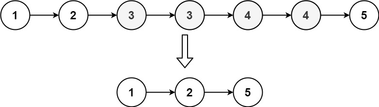
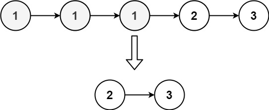

82. 删除排序链表中的重复元素 II
哨兵 + 一次遍历：prev.next 与后一个值相同就把这段重复值整段跳过，否则 prev 前进。
思路
- 哨兵
dummy处理「开头就重复」；prev永远指向已确定保留的最后一个结点，prev.next是待判断的结点。 prev.next和它后一个值相同就是重复段：cur越过整段相同的值，再prev.next = cur一步跳过。- 跳过后
prev不动，因为新的prev.next可能又是一段重复值；只有值唯一时才prev = prev.next。 - 循环条件是
prev.next和prev.next.next都不为空，只剩一个结点时它必然唯一，直接保留。
图解
最优解
1class Solution {2 public ListNode deleteDuplicates(ListNode head) {3 ListNode dummy = new ListNode(0, head);4 // prev 一定保留；prev.next 是还没判断的结点5 ListNode prev = dummy;6 while (prev.next != null && prev.next.next != null) {7 if (prev.next.val == prev.next.next.val) {8 // 值重复：cur 走到这段重复值的后面，整段跳过9 int dup = prev.next.val;10 ListNode cur = prev.next;11 while (cur != null && cur.val == dup) cur = cur.next;12 prev.next = cur;13 } else {14 prev = prev.next;15 }16 }17 return dummy.next;18 }19}题目
给定一个 已排序 的链表的头节点 head。
删除原始链表中所有 重复 数字的节点，只留下 不同 的数字。
返回 已排序 的链表。
示例 1：

输入：head = [1,2,3,3,4,4,5] 输出：[1,2,5]
示例 2：

输入：head = [1,1,1,2,3] 输出：[2,3]
提示：
- 链表中节点数目在范围
[0, 300]内 -100 <= Node.val <= 100- 题目数据保证链表已经按升序 排列
题面取自力扣当前版本。
数据快照 2026-11-04。题面版权归力扣所有，本站点仅供本人学习使用，请勿对外发布。